基于 Multi-Level-Cell 存储器的高维空间高效 Open Modification 谱库搜索
论文面向质谱分析中的 Open Modification Search（OMS），解决其搜索空间因肽段修饰而指数级扩大、现有加速器（ANN-SoLo、HyperOMS）并行度有限或内存占用过大难以随数据量扩展的问题。方法上采用 Multi-Level-Cell（MLC）RRAM 存储 hypervector，单单元最高存 3 bit，获得 3x 存储密度提升；通过差分权重映射与 open-circuit voltage sensing 在阵列内完成 Hamming 相似度 MVM 搜索，并将逐元素编码操作改造为分块（chunk）化的类 MVM 执行；同时利用 hyperdimensional computing（HD）的分布式表示容忍存储与计算错误，并提出无额外硬件代价的 3 bit 多比特 hypervector 方案。在 130nm 已流片 MLC RRAM 芯片（约 300 万单元）上实测：处理速度最高提升 77x（1.7x-76.7x），能效提升 500x-3000x，可容忍最高 10% 存储错误，相对已有 MLC 存内计算设计吞吐提升 16x。该工作属于生物信息学领域的存算一体加速器研究，与本团队的存储接口 IP 与设计验证业务无直接关联。
OMS 为发现发生翻译后修饰（PTM）的肽段，将匹配范围从相近 precursor mass 扩展到宽质量窗口，导致搜索空间指数级扩大；在质谱公开数据指数增长背景下，现有 OMS 加速器要么浮点运算并行度受限（ANN-SoLo），要么内存占用过大、扩展性差（HyperOMS），需要高密度存储方案与易于硬件并行的算法。
提出基于 MLC RRAM 的存内计算 OMS 加速器：(1) 用 hyperdimensional computing（HD）将谱向量经 ID-Level 编码为 8k 维 hypervector，以 Hamming 相似度搜索，利用 HD 的分布式冗余容忍存储错误；(2) MLC RRAM 每单元存 1-3 bit，参考 hypervector 以差分对映射为电导，查询 hypervector 非差分存储以最大化容量；(3) 采用 open-circuit voltage sensing 差分感知方案在阵列内完成 MVM 式 Hamming 搜索；(4) 将 level hypervector 改造为分块恒值形式，把编码的逐元素 MAC 转化为类 MVM 执行以提升吞吐与能效；(5) 提出 3 bit 多比特 hypervector 方案，不增加硬件成本。
MLC RRAM 每单元最高存储 3 bit，存储容量提升 3x
存内计算使数据处理速度最高提升 77x（结论中表述为 1.7x-76.7x），能效提升 500x-3000x（2-3 个数量级）
HD 算法可容忍最高 10% 的存储错误
在 130nm 已流片 MLC RRAM 芯片（300 万单元）上完成功能验证；相比已有 MLC 存内计算设计（最多驱动 4 行、3-level），本设计可激活 64 行、8-level，吞吐提升 16x
在 iPRG2012（16k query/1M 参考）与 HEK293 b1906（47k query/3M 参考）两个真实数据集上，与 RTX 4090 GPU 上的 HyperOMS 及 CPU/GPU 上的 ANN-SoLo 对比，鉴定肽段结果大部分一致（Venn 图对比）
HD 维度过低对噪声更敏感、可分性受限，过高则计算资源需求增加，需按应用权衡
相对 ANN-SoLo（高精度浮点、并行度受限）与 HyperOMS（GPU 上高维整数编码但内存占用大），本文首次将 MLC RRAM（每单元 3 bit）与存内计算结合用于 OMS：以 HD 的错误鲁棒性对冲 MLC RRAM 的电导弛豫与低开关比等非理想性；通过 chunk 化 level hypervector 把编码的逐元素运算改造成 MVM 式执行；并提出无额外硬件代价的 3 bit 多比特 hypervector 方案。此前 MLC RRAM 存内计算工作最多仅 3-level/4 行驱动，本文达到 8-level/64 行。
相关度级别：low
命中能力域：无明显对应
理由：论文核心是面向蛋白质组学质谱搜索的存算一体（RRAM in-memory computing）加速器，属于新兴器件与领域专用算法的跨层协同设计，不涉及本团队 LPDDR/HBM4/UCIe 等存储接口 IP 的架构定义、RTL 实现与验证、时序收敛或形式化工作。文中 FPGA 仅作为芯片与主机间的通信桥（Opal Kelly XEM6310），并非 FPGA 原型验证方法学；论文中的存储主题也仅指 RRAM 器件级模拟存储与计算，与团队的 DDR/HBM 控制器与 PHY IP 设计无实质交集，对 2.1-2.7 七个能力域均无直接命中。
建议动作：暂不相关
Keming Fan 1* , Wei-Chen Chen 2 , Sumukh Pinge 1 , H.-S. Philip Wong 2 , Tajana Rosing 1* 1 加州大学圣地亚哥分校，2 斯坦福大学
*{k4fan,tajana}@ucsd.edu
以及其他蛋白质修饰。该方法能够将修饰蛋白质的谱图与其未修饰的对应谱图进行比较，从而有助于实现更全面的分析。
然而，开放修饰谱库搜索（OMS）大幅扩展了搜索范围，因而面临挑战，需要更精细的设计。具体而言，我们需要：(1) 鉴于数据规模呈指数级增长，需要高密度存储解决方案；(2) 易于在硬件中并行化的算法，以实现更快的数据处理。已有若干工作对 OMS 算法进行了加速。ANN-SoLo 工具 [1] 使用最近邻索引来选择候选项，并采用移位点积在这些候选项上计算得分。然而，由于 ANN-SoLo 使用复杂的高精度浮点运算，其数据并行性有限。HyperOMS [12] 将输入数据编码为高维向量并执行简单的整数运算，这种方法使 GPU 架构上的并行度显著提升。然而，随着数据量的不断增长，两者都无法良好扩展，因而需要高密度存储解决方案。在本工作中，我们使用高密度多级单元（MLC）阻变随机存取存储器（RRAM）来提升存储容量。此外，我们采用存内计算（in-memory computing）方法来减少数据搬运，从而实现更快的数据处理。由于 MLC RRAM 和存内计算通常容易出错，我们利用超维计算（HD）的鲁棒性来容忍这些错误。本工作的主要贡献如下。
质谱（MS）技术在蛋白质组学研究中至关重要，它使得对复杂生物样本的分析成为可能。开放修饰搜索（OMS）标志着质谱技术的一次重大演进，因为它能够发现经过修饰的肽段。然而，OMS 的实现颇具挑战性，因为它会显著扩大搜索空间。这一扩展后的范围同时涵盖未修饰与修饰的肽段变体，从而导致计算需求增加。HyperOMS 是现有运行于 GPU 之上的最快 OMS 加速器，
开放修饰搜索（OMS）是一种很有前景的质谱分析算法，能够发现经过修饰的肽段。然而，OMS 会以指数方式扩展搜索范围，因此面临诸多挑战。现有的 OMS 加速器要么并行度有限，要么难以随数据量的增长而有效扩展。在本工作中，我们提出了一种利用多级单元（MLC）RRAM 存储器的 OMS 加速器，可将存储容量提升 3 倍。通过存内计算，我们实现了最高 77 倍的数据处理加速，同时能效提升两到三个数量级。测试在一片已流片的 MLC RRAM 芯片上完成。我们利用超维计算来容忍高达 10% 的存储器错误，同时在硬件中提供大规模并行性。
存内计算（In-memory computing），超维计算（Hyperdimensional computing）
质谱（MS）分析是研究蛋白质的一项关键技术，而蛋白质是现代药物的基本组成部分。在典型的 MS 实验中，会生成大量被称为查询谱图（query spectra）的谱图，并将其与包含已知肽段的参考数据库进行比对。MS 实验中的蛋白质常常会发生翻译后修饰（PTM），从而改变其质量与性质。然而，参考数据库中仅包含未修饰肽段的谱图。这使得搜索变得复杂，因为许多肽段可能无法找到匹配。
开放修饰搜索（OMS）通过允许对经过修饰的谱图进行鉴定，为规避这一问题提供了一种富有前景的解决方案。在传统的标准搜索中，比对仅限于具有相近前体质量的查询谱图与参考谱图之间。相比之下，OMS 将匹配范围扩展到了更广的范围。它在参考谱图上采用较宽的前体质量窗口，从而将 PTM 所引起的质量偏移考虑在内。
在副本不用于牟利或商业利益、且副本首页带有本声明及完整引用信息的前提下，允许免费制作本作品部分或全部内容的数字或纸质副本以供个人或课堂使用。本作品中第三方组件的版权必须得到尊重。如需用于其他所有用途，请联系作者/版权所有者。
© 2024 版权归所有者/作者所有。
ACM ISBN 979-8-4007-0601-1/24/06
仍然面临着内存占用庞大的挑战 [12]。这一挑战源于 OMS 固有的内存密集特性，导致了效率问题和数据传输瓶颈。存内计算（Processing in Memory）能够在内存空间内直接执行计算，为 OMS 加速提供了更优的解决方案。
Another challenge arises from the escalating data volumes. The public data for mass spectrometry analysis is experiencing exponential growth [14]; however, existing memory solutions face difficulties in scaling to meet the expanding demands.
Resistive random access memory (RRAM) is an emerging nonvolatile memory that stores data by changing its resistance. In TSMC 22nmtechnology, a single-level-cell (SLC) RRAM provides 3x higher storage capacity per area than high-density SRAM (Static Random Access Memory) [8], positioning it as an optimal solution for extensive data storage requirements.
Despite its density advantage, RRAM can effectively contribute to parallel in-memory acceleration. Prior research has explored the computational power of RRAM, particularly for the MAC (multiplyaccumulate) operation that is critical in modern neural networks. Figure 1a shows a typical configuration [18] of 1T1R RRAM array designed for matrix vector multiplication (MVM). Input data is mapped to analog voltages, and RRAM-stored weights are represented by their conductance. Currents are generated across multiple rows and accumulated along the columns, following Kirchhof's law. The ADC (Analog-to-Digital Converter) then converts currents to digital values, representing the computation outputs.
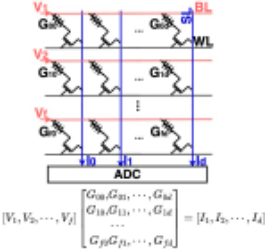
Programmed Conductance
Conductance after 1 hour
Conductance (μS)
Previous works [6, 20, 21] have primarily utilized SLC RRAM for storage or computation in various applications. In SLC memory, each RRAM device is programmable to low resistance to represent '1' or to high resistance to represent '0'. However, the potential of RRAM extends beyond binary storage, as it can achieve arbitrary analog resistance states by applying different voltages, enabling the storage of multi-bit data. This configuration is commonly referred to as multi-level-cell (MLC) RRAM. However, adopting MLC RRAM, while promising in increasing storage capacity, poses challenges due to device non-idealities. RRAM suffers from conductance relaxation and a relatively low on-off ratio. Figure 1b illustrates the conductance distribution in RRAM collected from a fabricated chip [18] after 60 minutes of programming, displaying a shift in conductance that hinders accurate storage and computing.
tm
Distribution Some works attempt to harness the potential of MLC RRAM. The authors of [4] use RRAM as a passive array for storage only, without the computing ability. In [13], they proposed an RRAM-based in-memory computing macro, but with only three levels per cell, which doesn't fully use the potential of MLC RRAM. Motivated by these challenges and recognizing the limitations of existing approaches, we propose a robust algorithm using hyperdimensional computing to tolerate errors associated with MLC RRAM.
超维计算（Hyperdimensional computing，HD）是一种受大脑启发的计算方法，用于模拟神经元活动。HD 将信息编码为称为超向量（hypervector）的二进制高维（长）向量，其维度通常为 1k-10k [11]。在本工作中，我们利用 HD 来加速 OMS，得益于其在硬件实现中的高度并行性以及对错误的鲁棒性。
图 2 展示了整体框图，其中包括将原始数据转换为谱向量的数据预处理。随后进行 HD 编码以及在高维空间（超空间）中的汉明搜索。最后，由 FDR 过滤器输出鉴定出的肽段。
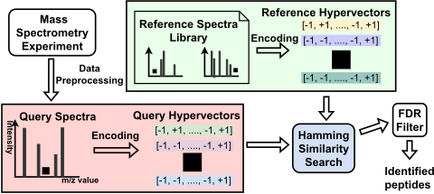
预处理是质谱（MS）分析的初始步骤，首先从原始数据中提取显著的峰特征。这一步骤包括识别并保留强度高于预定义强度阈值的峰，该阈值通常设定为最大峰强度的 1%。其目标是消除背景噪声，最终得到一个精炼的峰集合，即每个谱图中 50 至 150 个代表最有用特征的峰。接下来，通过将质荷比（m/z）归类到不同的区间（bin）中，将谱图转换为向量。所得向量包含反映峰强度的浮点值。当多个峰落入同一区间时，其强度将被求和。
超维计算（HD）将谱图向量编码为表示谱图中独特特征的正交二值超向量。先前的研究探索了多种编码方法，例如基于置换的编码 [15] 和随机投影编码 [3]。然而，这些方法可能无法有效捕捉谱图中的关键特征，例如 m/z 值和峰强度。在本工作中，我们采用一种 ID-Level 编码方法 [9] 来解决这一局限。
在编码过程中，每个峰位置（m/z 值）被映射到一个具有 𝐷 个维度的超向量，称为 𝐼 𝐷 。我们将每个峰的强度值量化为 Q 个等级，并为每个等级分配一个记为 𝑙 𝑗 的基础超向量。为了生成 Q 级基础超向量，我们首先创建一个具有 𝐷 个维度的随机二值基础超向量 𝑙 0 ，其中 𝑙 0 ∈ {- 1 , 1 } 𝐷 。其余的基础超向量 𝑙 𝑗 通过翻转前一个超向量 𝑙 𝑗 - 1 的 𝐷 /( 2 𝑄 ) 个比特来生成。这种方法确保相邻的 𝑙 𝑗 和 𝑙 𝑗 + 1 对之间比相距较远的对保持更高的相似性。先前的研究表明，量化等级的数量（通常选取在 Q=16 ∼ 32 的范围内）不会对该应用的结果产生显著影响 [12]。给定两组超向量，谱图向量使用以下公式被编码为一个超向量 ℎ （见图 3）。
基于多级单元存储器的高维空间高效开放修饰谱库搜索
对于谱图 𝑆 中的每个峰，我们在位置超向量 𝐼 𝐷 𝑖 与其对应的等级超向量 𝐿𝑉 𝑖 （ 𝐿𝑉 𝑖 ∈ { 𝑙 0 , · · · , 𝑙 𝑄 - 1 } ）之间执行逐元素乘法。然后，我们对结果求和，并使用 𝑆𝑖𝑔𝑛 () 函数进行量化，从而得到最终的二值超向量 ℎ 。
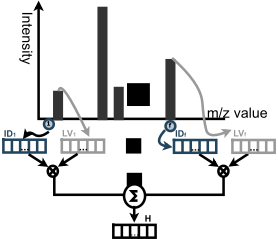
编码完成后，我们通过计算相似度来找出与查询超向量最相似的参考超向量。由于所有超向量均为二值向量，HD 用更简单的汉明相似度取代了余弦相似度。汉明相似度按向量配对中相等分量的数量来计算，可通过点积进行度量。
最后一步是应用错误发现率（FDR）过滤器，这是质谱（MS）分析中广泛使用的一种方法。该方法向谱库中引入不存在的诱饵谱图。随后，该过滤器对搜索工具选出的诱饵谱图进行筛查。在固定的 FDR 阈值下，可以比较不同搜索工具的性能。
尽管数据预处理通常离线完成，但编码和搜索主导了算法的运行时间（超过90%），并且它们是存储器密集型任务，最适合在存储器内完成。
在数据流中，编码是在存储器中执行的第一步，随后将编码后的超向量存储到存储器中。接着执行相似性搜索。然而，在本节中，我们以相反的顺序介绍我们的优化方法，首先聚焦于搜索的加速，然后再深入探讨编码。做出这一决定的原因在于，编码依赖于搜索加速过程中所引入的知识。
汉明相似性搜索的基本操作是查询超向量与参考超向量之间的矩阵-向量乘法（MVM），该操作可以在存储器内得到高效加速。在搜索过程中，我们将每个参考超向量（权重）垂直存储。在每个周期中，一个查询向量（输入）以模拟电压的形式被馈入阵列（见图 4a）。
4.1.1 权重映射。我们采用差分权重映射方案，其中一对中的两个单元共同存储一个数值。与非差分版本相比，该方案为非线性所引发的挑战提供了更好的解决方案，例如残余电流、阻变存储器（RRAM）的阻值失配以及外围开关的导通电阻。
存储在 RRAM 中的权重是编码后的参考超向量。一个差分对由同一列中相邻两行的两个单元组成，共同存储一个维度值 𝑊。它们的电导 𝑔 + 𝑖 和 𝑔 - 𝑖 被编程为相对于中间电平 𝑔 𝑚𝑎𝑥 / 2 的相反值，如下所示。
4.1.2 读出方案。传统的电流读出方法 [6, 21] 由于同时驱动多行受到限制而吞吐量有限，并且读出期间的静态电流会导致能耗增加。为了缓解这些影响，我们采用结合差分方案的开路电压读出 [18]。
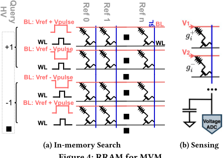
在 MVM 过程中，输入（查询）超向量同时通过差分 BL 电压传输，以表示带符号的输入（图 4a）。所有对乘累加（MAC）输出有贡献的激活行（数量为 𝑁）都会从 WL 接收高电平信号。所产生的电流由电容器收集，并按照下式在 SL 上生成电压。
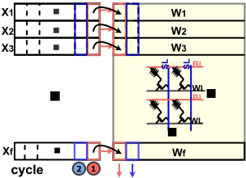
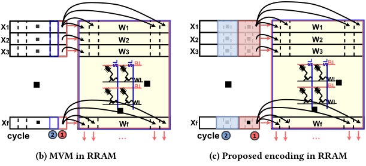
一旦 SL 电压达到稳态，
模数转换器（ADC）随即将该电压转换为数字输出。根据公式 5，所得的输出电压与预期的 MAC 输出呈线性关系。
4.1.3 来自存储器的误差。由于超向量具有分布式和联想的特性，超维计算（HD）对误差表现出鲁棒性。匹配模式之间的相似性显著高于不匹配的模式对。这种相似性上的巨大差异起到了容忍存储器误差的作用。
编码将输入数据映射为超向量。编码中的关键运算（见公式 1）是乘加（MAC）运算，该运算可以在存储器内加速。然而，编码涉及逐元素运算，这类运算难以像矩阵-向量乘法（MVM）那样在存储器内得到同样有效的加速。基于这些观察，在存储器域内优化编码过程十分重要。
基于这一观察，我们旨在将逐元素运算转化为 MVM 风格的运算，以提升吞吐量和能效。这通过修改输入（电平超向量）的生成方式来实现。鉴于基础 𝐿𝑉 超向量的数量（Q=16 ∼ 32）远小于超空间规模，𝐿𝑉 超向量的选择对最终结果的影响极小。我们不再随机生成基础 𝐿𝑉 超向量，而是将 𝐷 位超向量划分为若干块，每块内的所有位值均相同。由于一个块内的所有值都相同，我们不再将完整的 𝐷 位 𝐿𝑉 超向量逐位馈入阵列，而是逐块馈入。块的数量应根据算法相关因素（如 HD 维度、基础 𝐿𝑉 超向量的数量）以及硬件相关因素（包括阵列规模和 ADC 的列共享布局）来选择。总体而言，这一修改使得一个块内的所有逐元素 MAC 输出都能在单个周期内获得，类似于 MVM 的方式。
我们采用与搜索中相同的权重映射方式，将超向量转换为阻变存储器（RRAM）电导，并使用相同的差分读出方案。RRAM 可以执行 MAC 运算，这些运算包括在同一行上将输入与权重相乘，以及在列内沿垂直方向进行加法。由于这些运算在方向上的约束，每个位置超向量 𝐼 𝐷（权重 𝑊）以水平方式存储，而多个电平超向量 𝐿𝑉（输入 𝑋）则同时逐位馈入阵列。
4.2.1 高效编码。然而，与 MVM 相比，存储器阵列在逐元素运算方面能力较弱。在 MVM 中，在施加输入的每个周期内，会有多列被激活，每列各产生一个 MAC 输出，从而每个周期可得到多个 MAC（见图 4a 和 5b）。另一方面，在逐元素运算中，每个周期内阵列中只有一个对应的输出有效（见图 5a）。因此，完成相同数量的 MAC 计算需要更多的周期。另一个挑战源于这样一个事实：即使只有一列输出有效，也无法选择性地仅激活该特定列中的单元。在存储器阵列中，位线（BL）和字线（WL）由同一行上的所有单元共享。当输入到来时，该行上的所有单元都会被驱动而消耗功率，尽管其中一些单元产生的是不必要的结果。这使得其相比 MVM 更加耗电。
4.2.2 多位超向量。在先前的 HD 研究 [10, 12, 16, 20] 中，输入数据由二值超向量表示以供后续使用。然而，受 MLC 硬件具备在每个存储单元中存储多个比特的能力这一事实的启发，并考虑到大脑中的突触具有 4.7 比特的精度 [2]，使用多位超向量方案有可能带来更好的性能。
我们不生成二值超向量 𝐼 𝐷 ∈ {- 1 , 1 } 𝐷 ，而是采用多位方法。𝐼 𝐷 超向量的每个维度最多可达 3 比特，例如 𝐼 𝐷 ∈ {- 4 , - 3 , - 2 , - 1 , 1 , 2 , 3 , 4 } 𝐷 。此外，这一改动不会引入额外的硬件成本；而若提高输入级超向量 𝐿𝑉 的比特精度，则会增加处理所需的总周期数，因为输入是以逐位串行方式馈入阵列的。
4.2.3 来自存储器的误差。在编码过程中，最终输出通过 𝑆𝑖𝑔𝑛 () 函数被量化为二值，因此只需要低分辨率的 MAC 输出。这可以容忍来自存储单元的误差，例如，单个比特的翻转不会显著影响输出。这还降低了 ADC 的设计要求，使 ADC 引入的计算误差降至最低。
5.1.1 多级单元阻变存储器（MLC RRAM）芯片测量。我们在一颗已流片的 MLC RRAM 芯片 [18] 上测试了我们的算法，该芯片采用 130nm 工艺，总计包含 300 万个 RRAM 单元。集成在 Opal Kelly XEM6310 模块上的 Xilinx 现场可编程门阵列（FPGA）充当上位机与芯片之间的通信桥梁（图 6）。该芯片从片外文本文件加载输入超向量，并将输出超向量写入片外文本文件。
5.1.2 开放修饰谱库搜索（OMS）工作负载与基准测试。我们使用两个真实世界数据集来评估该设计。第一个数据集使用 iPRG2012（共 16k 张谱图）[5] 作为查询，并使用人类 HCD 酵母谱库（共 1M 张谱图）[17] 作为参考。第二个数据集使用 HEK293 b1906（共 47k 张谱图）[7] 作为查询，并使用人类谱库（共 3M 张谱图）[19] 作为参考。我们将我们的结果与两项最先进的 OMS 工作进行比较：在 CPU/GPU 上运行的 ANN-SoLo [1] 和在 GPU 上运行的 HyperOMS [12]。基线基准测试分别在 NVIDIA GeForce RTX 4090 GPU 和 Intel Core i7-11700K CPU 上进行。数据预处理与错误发现率（FDR）过滤的参数见表 1。
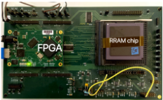
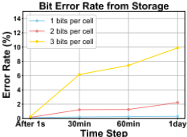
5.2.1 用于超向量存储的 RRAM。阻变存储器（RRAM）的弛豫主要发生在初始阶段，因此在 1 天或 2 天后采集数据并无显著影响。因此，我们分别在编程完成后立即、30 分钟后、60 分钟后以及 1 天后采集数据。图 8 展示了电导的直方图，我们基于第 4.3 节所述的映射方法，由该直方图计算得到图 7 中的误码率数据。我们的设计在每个单元中最多可存储 3 比特，从而使存储容量提升 3 倍。
| Dataset | iPRG2012 | HEK293 |
|---|---|---|
| number of peaks in spectra | 50 | 50 |
| Bin size | 0.05 | 0.04 |
| Precursor m/z tolerance | 20ppm/500Da | 5ppm/500Da |
| FDR threshold | 1% | 1% |
| Dataset | iPRG2012 | HEK293 |
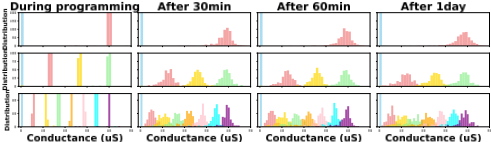
在后续各节中，所有数据均在编程完成后至少 2 小时采集，以计入 RRAM 弛豫效应的影响。
5.2.2 用于计算的 RRAM。在编码方面，我们将 RRAM 输出的二进制值与对应的真值二进制值进行比较，以计算误码率。对于存内汉明搜索，由于输出由整数而非二进制数组成，我们报告归一化均方误差。图 9 展示了每单元存储 1/2/3 比特时的错误率，分别对应 2/4/8 级的多级单元（MLC）。随着激活行数的增加，我们获得了更高的吞吐量，但计算错误也随之增多。
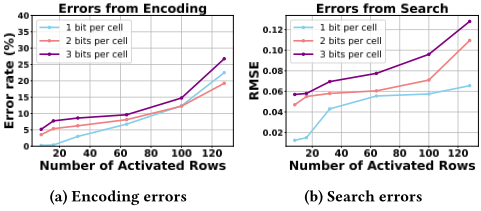
与面向存内计算的最先进 MLC RRAM 设计 [13]（其采用 3 级 RRAM 时最多只能驱动 4 行）相比，我们的设计采用 8 级 RRAM 时最多可激活 64 行（后续章节均采用此设置），这意味着吞吐量提升 16 倍，同时具备更大的存储容量。这一性能提升得益于 RRAM 器件的改进、设计策略的优化，以及鲁棒超维（HD）计算带来的优势。
5.3.1 搜索质量。生物数据分析十分复杂，且不存在可用于搜索结果的真值数据（ground truth）。因此，我们将我们的结果与现有工具进行比较。我们将维度设置为 8k，𝐼 𝐷 超向量（hypervector）的精度为 3 位。图 10 展示了所鉴定肽段的对比情况。结果表明，我们工作中鉴定出的大多数肽段与其他工具鉴定的肽段相一致，这证明了我们结果的有效性。
5.3.2 HD 鲁棒性。在 HD 维度为 8k 的条件下，我们在 HD 算法中引入了不同级别的编码与搜索位错误率。图 11 表明，我们的设计能够容忍高达 10% 的错误。另一个值得注意的发现是，采用多位超向量方案带来了性能提升。
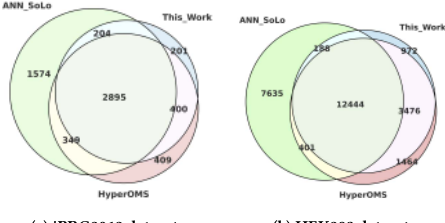
(a) iPRG2012 数据集
(b) HEK293 数据集
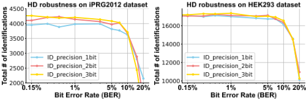
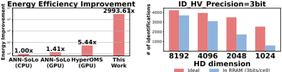
RRAM 内的理想情况（3 位/单元）
5.3.4 HD 维度。HD 维度是影响最终结果的关键因素。较低的维度对噪声更为敏感，且可分性有限（见图 13）。然而，过高的维度会引入更多的计算资源需求，这凸显了针对目标应用进行均衡考量的必要性。
本文提出了一种用于开放修饰谱库搜索的加速器。我们采用多值单元 RRAM 将存储容量提升 3 倍，并配合一种可容忍来自存储器高达 10% 错误的鲁棒超维计算（HD）算法。我们通过存内计算对主要阶段进行加速，使处理速度提升 1.7 倍至 76.7 倍，能效提升 500 倍至 3000 倍。该加速器的功能已在所制备的 RRAM 芯片上得到成功验证。尽管我们的加速器面向质谱应用，但鲁棒 HD 与硬件加速技术的思想具有超越质谱领域、实现更广泛应用的潜力。
1 条证据未在原文中核对到